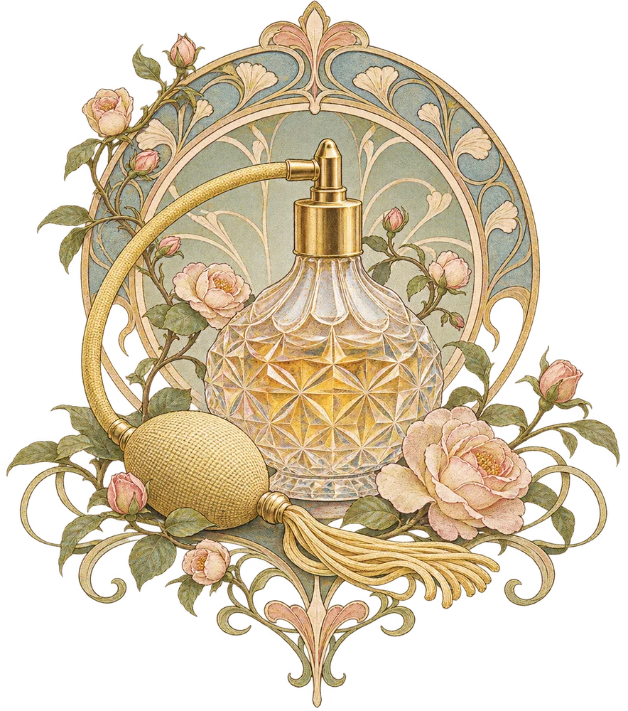

香 氣 入 門 指 南
第一次
認識香水
從香調到試香
找到屬於自己的氣味線索

一瓶香水，是一種氣味的組合
天然香材
可能來自花、木材、樹脂、香料或柑橘果皮，透過蒸餾或萃取取得香氣。
合成香料
也是調香的材料，調香師可以將不同材料組合成配方。
前調、中調、後調：氣味的時間線
前調
剛噴上時容易先聞到的印象，例如柑橘或清新草本。
中調
逐漸展現的香氣主體，例如玫瑰、茉莉。
後調
較持久、留下深度的印象，例如木質或香草。
香調家族：一張探索氣味的地圖
花香調 Floral
以花香意象為核心。
琥珀調 Ambery
香調輪中的主要分類之一；連結的官方圖表使用 Oriental 一詞。
木質調 Woody
以木質氣味為分類方向。
清新調 Fresh
包含柑橘、綠意、果香等子類。
「前中後調」和「香調家族」差在哪？
前、中、後調
從時間看：一款香水從剛噴上到之後，呈現什麼氣味印象？
香調家族
從整體特徵看：它比較接近花香、木質、清新，還是其他類型？
EDP 與 EDT，先認識名稱
淡香精 EDP
一般被描述為相對較高濃度的香水類型。
淡香水 EDT
一般被描述為相對較低濃度的香水類型。
第一次試香，可以這樣開始
試香紙初選
先聞第一印象，記下有興趣的名稱。
等一等再聞
留意香味變化，再比較喜歡的選項。
確認自身感受
香水在不同人身上的表現可能不同；若沒有皮膚敏感顧慮，再考慮少量試用。
帶著三個問題，開始探索
① 我喜歡哪一類整體氣味？先從香調家族找線索。
② 我喜歡它剛噴上的味道，還是過一陣子之後的味道？
③ 比較不同版本後，哪一款讓我感覺最喜歡、最適合？
不用急著找到標準答案，喜好可以慢慢累積。
資料來源
International Fragrance Association｜How is fragrance made?
The Perfume Society｜Frequently Asked Questions
Michael Edwards｜Fragrance Families
Joe Schwarcz, McGill University｜The Story of Perfume
Daniel Mazzoni, DermNet｜Fragrances and perfumes